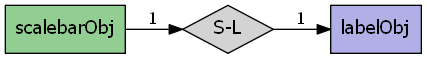
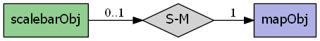

mapscript.scalebarObj¶
- class mapscript.scalebarObj¶
The SCALEBAR object
Overview
The scalebarObj has the following relationships:


Attributes
alignint See ALIGN
backgroundcolorcolorObjScalebar background color - see BACKGROUNDCOLORcolorheightint Height in pixels - see SIZE
imagecolorcolorObjBackground color of scalebar - see IMAGECOLORintervalsint Number of intervals - see INTERVALS
labeloffsetxint See OFFSET
offsetyint See OFFSET
outlinecolorcolorObjForeground outline color - see OUTLINECOLORpositionint For embedded scalebars - see POSITION -
MS_UL,MS_UC,MS_UR,MS_LL,MS_LC, orMS_LRpostlabelcacheint See POSTLABELCACHE -
MS_TRUEorMS_FALSEstatusint ON, OFF or EMBED - see STATUS -
MS_ON,MS_OFF, orMS_EMBED.styleint 0 or 1 - see STYLE
thisownThe membership flag
transparentint Allows transparency for an embedded scalebar - see TRANSPARENT
unitsint See UNITS
widthint Height in pixels - see SIZE
Methods
- convertToString() char[source]¶
Saves the object to a string. Provides the inverse option for updateFromString.
- updateFromString(snippet: char) int[source]¶
Update a scalebar from a string snippet. Returns
MS_SUCCESSorMS_FAILURE